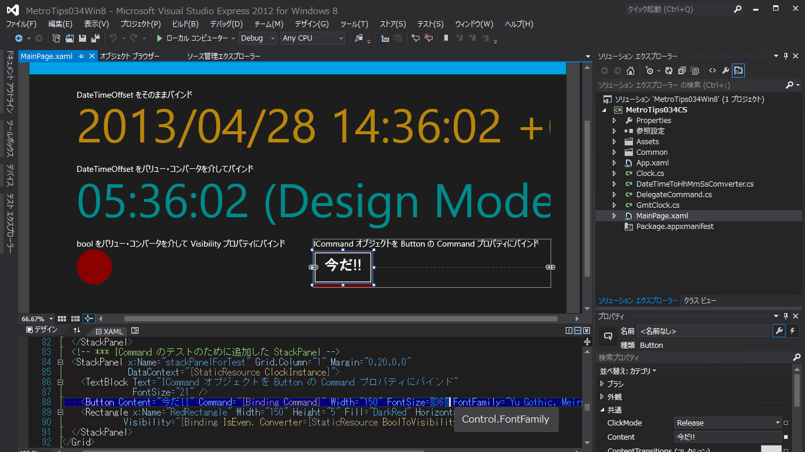

ICommand インターフェイスを使って Button の Command を実行する
これは次の記事のサンプルコードをベースにしています。
@IT 2013/04/25 掲載
デザイン画面でデータをバインドするには？［Win 8／WP 8］
前回までで紹介したデータ・バインドの方法では、実際にどのような表示になるかは実行してみないと分からない。実行する前にVisual Studioのデザイン画面で表示を確かめることはできないだろうか？
そこで本稿では、XAMLコードだけでデータ・ソースのインスタンスを生成し、それをデータ・コンテキストに設定してデザイン画面に表示する方法を説明する
コードの全体を理解したいときは、 上の記事をお読みください。
[2013/5/1]
ソースコードを入れ替えました
下記の説明にはありませんが、新しいサンプルコードでは CommandParameter を使って複数のボタンの機能を使い分けるようになっています。
Building the Sample
これらを準備するには、第1回のTIPSを参考にしてほしい。本稿では64bit版Win 8 ProとVS 2012 Express for Windows 8を使用している。
Description
M と V を分離するために
UI を持つアプリは、 Model と View を分離するのが良いのですな。 主にメンテナンスの面で (ということは、 開発中にどんどん姿が変わっていくときにも有効)。
Windows ストア アプリで M と V を分離しようとしたとき、 最大の敵はたぶん「コマンド」。
たとえばボタン クリックで何かする、 というコマンドを Model (≒業務ロジック) と綺麗に切り離そうとすると、 ICommand インターフェイスを実装したコマンド オブジェクトを使うのだけれど、 意外とサンプルが無い。 ので、 簡単な例をここで紹介しておきます。
ちなみに、「たかがクラウドのフロントエンドごときに MVVM を使うのかい!?」 って話はありますが、 知っておいて損はありません。 というか、 知ったうえで、 「この程度のアプリでは MVVM を適用しないほうがお得」という判断をすべきでしょう。
ICommand の実装
これの実装例は、 けっこう見つかります。
MSDN とか @okazuki のブログ記事とか。
ここでは、
そのブログ記事の DelegateCommand クラスをそのまま使わせてもらいます。 これは、 コマンドで実行するロジックを、 インタンスを作るときに渡せるという汎用的なものです。
M の実装
このアプリは Model (…というほどキチンとしたものではありませんが) として Clock クラスを持っています。 これに、 上記の DelegateCommand クラスのインスタンスも持たせましょう。 持たせるコマンドは、 現在時刻の秒が偶数のときに実行できる (という、わざとらしい例w) ものとします。
Model には次のように、 ICommand の実装を見せるプロパティと、 コマンドの有効/無効の変化を誰か(=コマンドの消費者)に教えるコードが必要です。
// Clock クラスの改修部分
// *** ICommand の実装を公開するプロパティ
private DelegateCommand _command;
public DelegateCommand Command {
get {
if(_command == null)
_command = new DelegateCommand(
// コマンドで実行されるのは CommandAction に登録した処理
() =>
{
var action = CommandAction;
if (action != null)
action();
},
// コマンドの実行可否は IsEven プロパティに依存
() => IsEven);
return _command;
}
}
public Action CommandAction { get; set; }
// 秒が偶数のとき true (既存のコード)
private bool _isEven;
public bool IsEven
{
get { return _isEven; }
internal set
{
if (SetProperty(ref _isEven, value))
{
// 以下 ↓ を追加
// *** IsEven プロパティが変化したときだけ
// CanExecuteChanged イベントを発火させる
this.Command.RaiseCanExecuteChanged();
}
}
}
// Clock クラスの改修部分 // *** ICommand の実装を公開するプロパティ private DelegateCommand _command; public DelegateCommand Command { get { if(_command == null) _command = new DelegateCommand( // コマンドで実行されるのは CommandAction に登録した処理 () => { var action = CommandAction; if (action != null) action(); }, // コマンドの実行可否は IsEven () => IsEven); return _command; } } public Action CommandAction { get; set; } // 秒が偶数のとき true (既存のコード) private bool _isEven; public bool IsEven { get { return _isEven; } internal set { if (SetProperty(ref _isEven, value)) { // 以下 ↓ を追加 // *** IsEven プロパティが変化したときだけ // CanExecuteChanged イベントを発火させる this.Command.RaiseCanExecuteChanged(); } } }
※ なお、 Model, Model と言ってきましたが、 ICommand (System.Windows.Input 名前空間) なんてものを入れちゃったので、 もはや純粋な Model (ロジック) とは呼べません。 むしろ、 画面を抽象的に表現しているナニカのような…。
V の実装
画面には Button を置いて、 Model の Command プロパティをバインドしましょう。
<!-- *** ICommand のテストのために追加した StackPanel -->
<StackPanel x:Name="stackPanelForTest" Grid.Column="1" Margin="0,20,0,0"
DataContext="{StaticResource ClockInstance}">
……省略……
<Button Content="今だ!!" Command="{Binding Command}" ……省略…… />
……省略……
</StackPanel>
<!-- *** ICommand のテストのために追加した StackPanel --> <StackPanel x:Name="stackPanelForTest" Grid.Column="1" Margin="0,20,0,0" DataContext="{StaticResource ClockInstance}"> ……省略…… <Button Content="今だ!!" Command="{Binding Command}" ……省略…… /> ……省略…… </StackPanel>
これで完成? いえ、 まだコマンドで実行する処理を与えていません。
今回は、 Button が配置されている StackPanel の色を変えてみましょう。 この処理は UI を変更するものですから、 V の側に記述します。
public MainPage()
{
this.InitializeComponent();
// *** 新しく設置した StackPanel の DataContext の CommandAction を設定する。
// UIをいじるアクションなので、コードビハインドで設定する。
var clk = this.stackPanelForTest.DataContext as Clock;
if (clk != null)
{
clk.CommandAction = async () =>
{
this.stackPanelForTest.Background = new SolidColorBrush(Colors.HotPink);
await Task.Delay(300);
this.stackPanelForTest.Background = new SolidColorBrush(Colors.Transparent);
};
}
}
public MainPage() { this.InitializeComponent(); // *** 新しく設置した StackPanel の DataContext の CommandAction を設定する。 // UIをいじるアクションなので、コードビハインドで設定する。 var clk = this.stackPanelForTest.DataContext as Clock; if (clk != null) { clk.CommandAction = async () => { this.stackPanelForTest.Background = new SolidColorBrush(Colors.HotPink); await Task.Delay(300); this.stackPanelForTest.Background = new SolidColorBrush(Colors.Transparent); }; } }
これで完成です。

実行すると、秒が偶数のときに [今だ!!] ボタンが有効になるので、 その間にクリックすると背景がピンクに変わります。
補足
ICommand の実装に出てくる CanExecuteChanged の第1引数は this になっています。 これは、 ほかのオブジェクトを指定したり null だったりしても、 本来は OK です。 ただし、 Windows 8/RT では次の KB2750149 のパッチが当たってないと this しかダメですので、 注意してください。
・KB2750149 (2013/1) "An update is available for the .NET Framework 4.5 in Windows 8, Windows RT and Windows Server 2012"
・Connect #751429 (2012/6/28～) "WPF: ICommand CanExecuteChanged behaviour change in .NET 4.5"